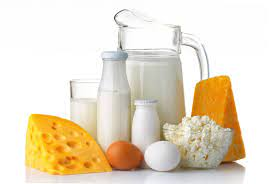

Información

1Consecuencias
Debilitan el riñón y producen un exceso de mucosidades,Inflaman los intestinos y no favorecen una buena digestión, Reducen la temperatura corporal,Producen problemas de absorción y gases,Propensión al cáncer, Problemas de colesterol,Afectan el semen,Aumentan el peso
2Ventajas
Calcio, vitaminas,la formacion de nuevos tejidos, buena circulación, flora bacteriana intestinal, impide germenes patógenos en el intestino
3Desventajas
Agrava la artristis rematoide, Anemia ferropénica, irritante en el aparato digestivo, pueden causar cataratas, y la Lactosa.
4Enfermedades
Los productos lácteos crudos pueden contener patógenos que causa la enfermedad como Campylobacter, Escherichia coli, Listeria, Salmonella y Yersinia.